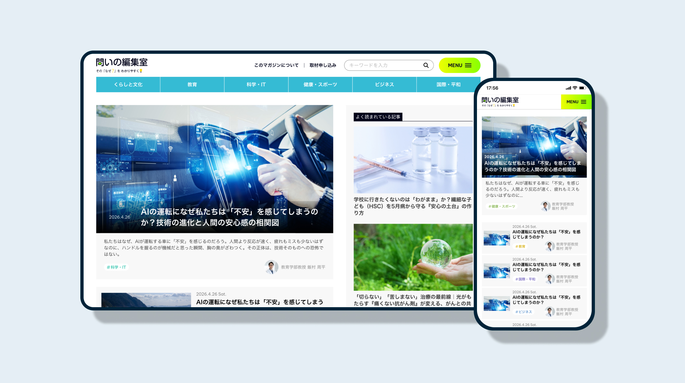

#Design
創価大学｜問いの編集室
https://magazine.soka.ac.jp/先輩が制作したトップページのデザインを起点に、トップ以外のページを中心にサイト全体へ展開しました。問いと分かりやすさを柔らかなフォントで表現し、研究ページでは、よくある見出しに寄りすぎない表現やボタン、図版の見せ方を検討しました。

#Design
先輩が制作したトップページのデザインを起点に、トップ以外のページを中心にサイト全体へ展開しました。問いと分かりやすさを柔らかなフォントで表現し、研究ページでは、よくある見出しに寄りすぎない表現やボタン、図版の見せ方を検討しました。